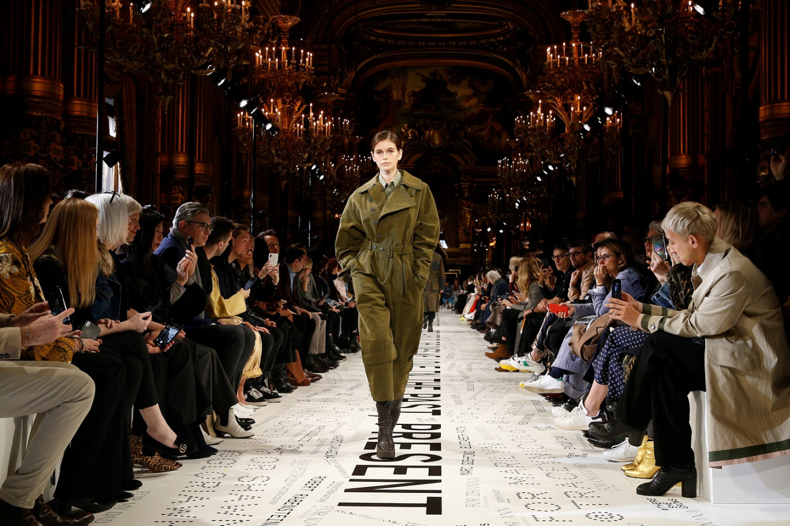

PARIS FASHION WEEK
Tjedan mode u Parizu (francuski: Semaine de la mode de Paris)
serija je prezentacija dizajnera koje se održavaju svake dvije godine u Parizu u Francuskoj,
a proljeće / ljeto i jesen / zima održavaju se svake godine. Termine određuje Francuska modna federacija.
Tjedan mode u Parizu održava se na mjestima širom grada.

Uz revije konfekcije, postoje i revije muške i visoke mode,
koje se održavaju polugodišnje za proljeće / ljeto i jesen / zimu.
Također, svake godine poznati brendovi poput Diora, Chanela, Louis Vuittona, Givenchyja i Célinea
vode svoje emisije na povijesnim mjestima poput Carrousel du Louvre i Grand Palaisa.
"BIG 4"
Tjedan mode u Parizu dio je globalnog tjedna mode "Big 4",a ostali su London Fashion Week, Milanski tjedan mode i New York Fashion Week.
Raspored započinje New Yorkom, slijedi London, a zatim Milano i završava u Parizu.

1868. godine stvorena je Chambre Syndicale de la Haute Couture kako bi se postavile specifikacije kako bi se utvrdilo što čini "kuća mode".
Skupina je zaključila da je za odjeću visoke mode potrebna odjeća; izrađen po mjeri da stane nositelju,
ručno ga je sašio višestruki vješt majstor u odvojenim poljima vezenja, šavova i perliranja,
a mogu se koristiti samo najkvalitetniji materijali.
Pedeset i tri godine nakon što je stvorena Chambre Syndicale de la Haute Couture,
francuski tisak je 1921. stvorio L’Association de Protection des Industries Artistiques Saisonnieres ili PAIS kako bi zaštitio modne dizajne od kopiranja.
Da bi se osigurala autorska prava dizajnera, njihove su kreacije fotografirane na modelu ili manekenki s prednje,
stražnje strane i bočnih strana kako bi se katalog dizajnirao.
1945. Chambre Syndicale de la Haute Couture uspostavila je još jedan niz pravila kojima se reguliraju i određuju kuće visoke mode.
Kako bi zadovoljili kriterije, kuća je trebala osigurati da slijede ažurirana pravila,
a jedno od njih je da u svakoj sezoni partija mode mora predstaviti kolekciju od najmanje 35 serija u dnevnoj i večernjoj odjeći pariškom tisku.
Ostalo je imalo najmanje 20 članova osoblja, a svaki dizajn mora sadržavati okove i biti izrađen po narudžbi klijentele.
Sljedeći dvogodišnji događaji kuća visoke mode u skladu s novim smjernicama postavljenim od strane Chambre Syndicale de la Haute Couture viđeni su kao prvi par modnih tjedana u Parizu.